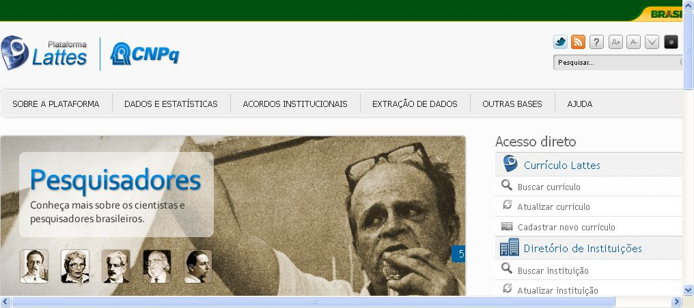
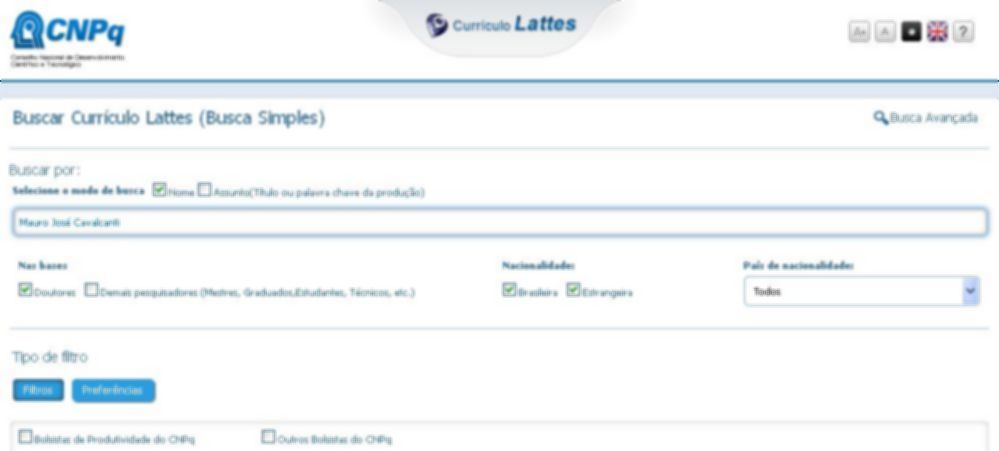
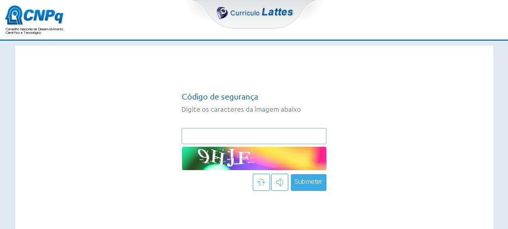
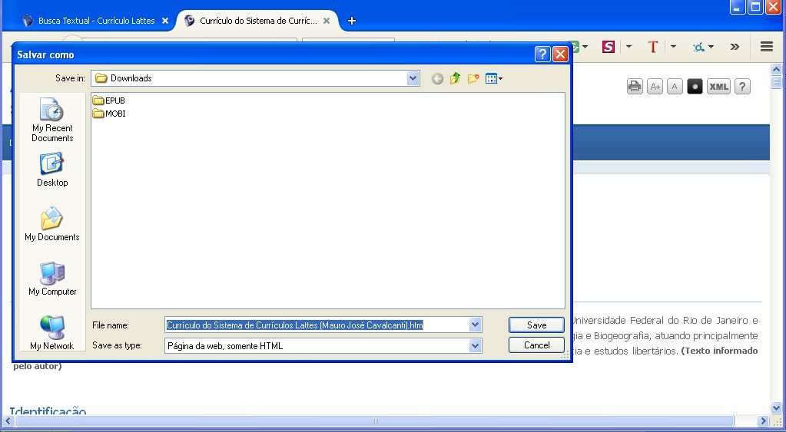
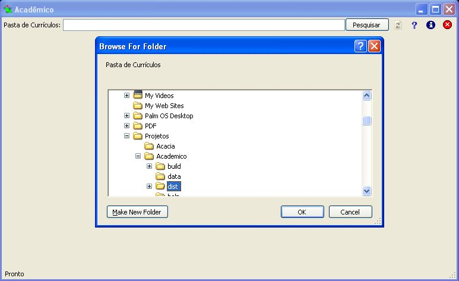
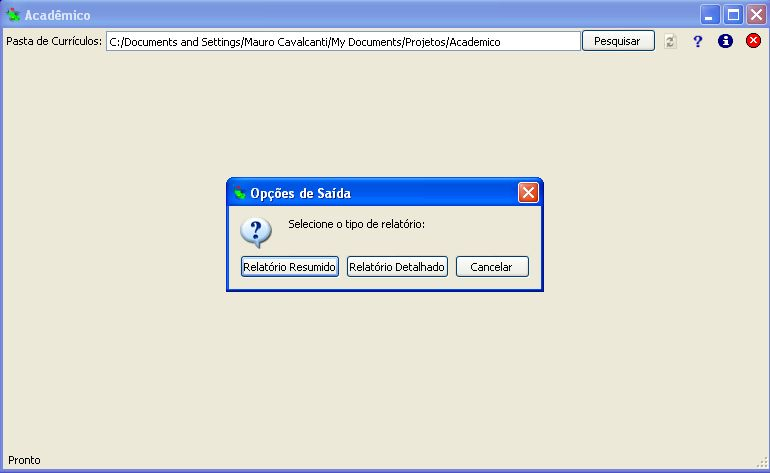
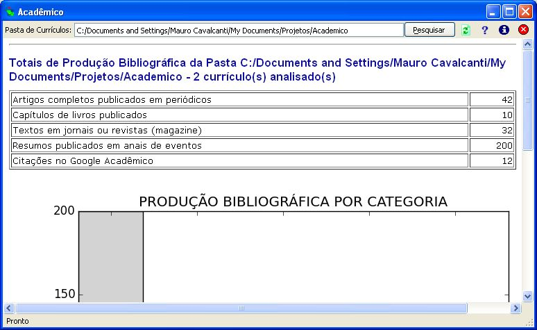

Instruções para utilização do sistema Acadêmico
Parte I - Exportação do currículo a partir da Plataforma
Lattes
- Acesse a página principal da Plataforma Lattes (http://lattes.cnpb.br)
e selecione a opção "Buscar currículo" conforme a figura abaixo:

- Digite o nome a ser buscado conforme a figura abaixo:

- Digite o código de segurança CAPTCHA para acessar o currículo, de acordo com a figura abaixo:
 - Após ser exibido o currículo, selecione a opção "Salvar Página"
no menu do navegador, conforme a figura abaixo:

- Clique em "Salvar" para salvar o
currículo em um arquivo no formato HTML.
ATENÇÃO:
Os passos acima devem ser executados para cada currículo individual.
O Acadêmico
não extrai dados automaticamente da Plataforma Lattes!
Parte II -
Análise do currículo com o sistema Acadêmico
- Execute o sistema Acadêmico,
clique no botão "Pesquisar" e
selecione a pasta em que
os arquivos em formato HTML foram gravados, conforme a figura abaixo:

- Uma caixa de diálogo será exibida
solicitando o tipo de relatório a ser gerado: Resumido
(apenas as estatísticas consolidades para todos os
currículos) ou Completo
(análise detalhada de cada currículo individual, de acordo com a figura abaixo:
 - Após selecioner a opção desejada, aguarde o resultado da análise dos
dados. O relatório gerado em formato HTML é exibido na tela principal do sistema Acadêmico e também gravado na pasta "data" localizada dentro da pasta de instalação do sistema.
